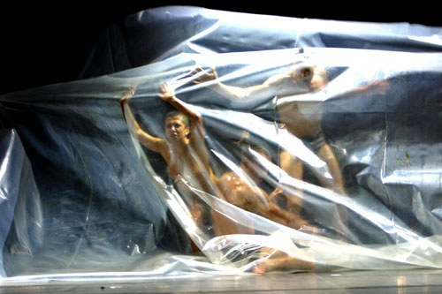
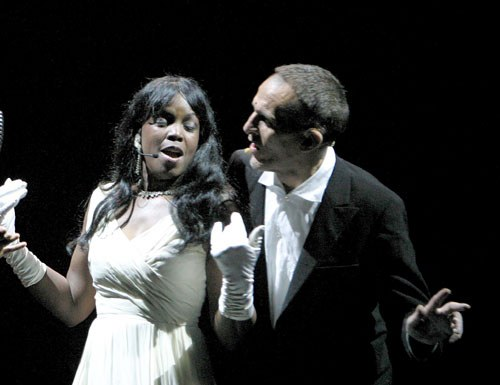

B-C-G-L-F. Le iniziali di un nome, di una traiettoria: dalla bandiera rossa di CCCP alla preghiera latina degli Appennini. Un autobiografismo che attraversa il punk italiano e finisce nella liturgia.
B-C-G-L-F. The initials of a name, of a trajectory: from CCCP's red flag to the Latin prayer of the Apennines. An autobiographism that crosses Italian punk and ends in liturgy.
B-C-G-L-F. Les initiales d'un nom, d'une trajectoire : du drapeau rouge des CCCP à la prière latine des Apennins.
Per il Teatro Valle di Roma, nel 2003, Cristian Taraborrelli firma scene e costumi — con la co-firma del regista Giorgio Barberio Corsetti — di Iniziali: BCGLF, opera teatrale autobiografica scritta e interpretata da Giovanni Lindo Ferretti: poeta e ex-frontman dei CCCP — Fedeli alla linea (1982–1990), poi dei C.S.I., una delle voci più rappresentative del rock italiano colto e politico. Le musiche sono firmate da Gianni Maroccolo, bassista storico di Litfiba e dei C.S.I.; le video-immagini da Fabio Massimo Iaquone. Produzione di Emilia Romagna Teatro Fondazione, ATER, Romaeuropa Festival.
For the Teatro Valle in Rome, in 2003, Cristian Taraborrelli signs set and costumes — co-signed with director Giorgio Barberio Corsetti — of Iniziali: BCGLF, an autobiographical theatrical work written and performed by Giovanni Lindo Ferretti: poet and former frontman of CCCP — Fedeli alla linea (1982–1990), then of C.S.I., one of the most representative voices of Italian cultivated and political rock. Music by Gianni Maroccolo, historic bassist of Litfiba and C.S.I.; video imagery by Fabio Massimo Iaquone.
Pour le Teatro Valle de Rome, en 2003, Cristian Taraborrelli signe décors et costumes — cosignés avec le metteur en scène Giorgio Barberio Corsetti — de Iniziali: BCGLF, œuvre théâtrale autobiographique écrite et interprétée par Giovanni Lindo Ferretti. Musique de Gianni Maroccolo, vidéo de Fabio Massimo Iaquone.
L'Opera — Lindo Ferretti, dalla CCCP all'Appennino
Giovanni Lindo Ferretti, nato a Cerreto Alpi (Reggio Emilia) nel 1953, è insieme a Massimo Zamboni il fondatore dei CCCP — Fedeli alla linea, il gruppo punk-filosofico che fra il 1982 e il 1990 ha dato all'Italia uno dei vocabolari più potenti della musica politica del decennio. «Produci-Consuma-Crepa», «Annarella», «Emilia paranoica»: testi che attraversano il punk berlinese e il leninismo di provincia, la liturgia ortodossa e la dance moscovita, in una poetica unica nel panorama europeo. Dopo la dissoluzione dei CCCP, fonda C.S.I. (1992), poi P.G.R. (2000), accompagnando un percorso di riscoperta cattolica e di radicamento appenninico che porterà al ritorno al paese natale di Cerreto Alpi e all'allevamento di cavalli.
Il testo di Iniziali: BCGLF è il primo monologo teatrale di Lindo Ferretti, una auto-biografia in cinque capitoli — uno per ogni iniziale: Barrocchina (la nonna, l'infanzia in valle), CCCP (il punk, Berlino, Mosca, gli anni Ottanta), Giovanni (il battesimo cattolico, il ritorno al nome di battesimo), Lindo (lo pseudonimo punk), Ferretti (il cognome, la famiglia, l'Appennino). Il testo si attraversa cantando, declamando, recitando, in un'oscillazione costante tra concerto rock e teatro civile.
Giovanni Lindo Ferretti, born in Cerreto Alpi (Reggio Emilia) in 1953, is, with Massimo Zamboni, the founder of CCCP — Fedeli alla linea, the punk-philosophical band that between 1982 and 1990 gave Italy one of the most powerful political music vocabularies of the decade. After CCCP's dissolution, he founded C.S.I. (1992), then P.G.R. (2000). The text of Iniziali: BCGLF is Lindo Ferretti's first theatrical monologue, a five-chapter auto-biography, one for each initial.
Giovanni Lindo Ferretti, né à Cerreto Alpi (Reggio Emilia) en 1953, est, avec Massimo Zamboni, le fondateur des CCCP — Fedeli alla linea. Le texte d'Iniziali: BCGLF est le premier monologue théâtral de Lindo Ferretti, une autobiographie en cinq chapitres.
La Visione — Il palcoscenico come stanza interiore
Corsetti rifiuta tanto la scenografia rock (luci colorate, fumo, simboli politici) quanto la messa in scena teatrale tradizionale. Cerca uno spazio in cui Ferretti, solo, possa essere ascoltato come un cantore appenninico contemporaneo: un palcoscenico che funzioni come stanza interiore, in cui i ricordi affiorano per tracce — non per ricostruzioni.
La scena di Cristian Taraborrelli con Corsetti costruisce un dispositivo essenziale: un fondale di lavagne nere su cui appaiono e scompaiono le iniziali del titolo (B, C, G, L, F), una sedia, un microfono, un piano. Le video-immagini di Iaquone — archivi storici, scene di Berlino Est, paesaggi degli Appennini, foto di nonne — non illustrano il testo: lo scolpiscono per controcanto. La musica live di Gianni Maroccolo al basso dà alla scena la pulsazione punk-meditativa di una metà da camera.
I costumi — o meglio l'antico-costume: Ferretti in scena con i suoi abiti da Cerreto Alpi, una camicia, un mantello pesante — rifiutano qualsiasi caratterizzazione: l'autore in scena è se stesso, non un personaggio. La produzione 2003 è uno snodo: il sodalizio Corsetti-Taraborrelli si misura per la prima volta con la parola d'autore vivente in scena, anticipando di vent'anni le strade del teatro civile italiano contemporaneo.
Corsetti seeks a stage that works as an interior room. Cristian Taraborrelli's set with Corsetti builds an essential device: a backdrop of black blackboards on which the title's initials appear and disappear, a chair, a microphone, a piano. Iaquone's video imagery sculpts the text by counterpoint. Live music by Gianni Maroccolo on bass gives the stage the punk-meditative pulse of a chamber piece.
Corsetti cherche une scène qui fonctionne comme une chambre intérieure. Les vidéo-images d'Iaquone sculptent le texte par contrepoint.
Foto di Scena — Archivio ERT
Foto della produzione 2003 dall’Archivio Produzioni Emilia Romagna Teatro Fondazione · Debutto Teatro Palladium, Romaeuropa Festival, giovedì 30 ottobre 2003.



Archivio Emilia Romagna Teatro Fondazione · produzione ERT con Romaeuropa Festival 2003
Ripresa integrale — Ferretti e Corsetti dal vivo
Ripresa integrale dello spettacolo con Giovanni Lindo Ferretti e Giorgio Barberio Corsetti in scena. Il dispositivo scenico di Cristian Taraborrelli — il palcoscenico come stanza interiore — entra direttamente nel documento visivo del live: voce, parola, oggetto, video Iaquone.
Full stage recording with Giovanni Lindo Ferretti and Giorgio Barberio Corsetti on stage. Cristian Taraborrelli’s scenic device — the stage as an interior room — enters the live visual document directly: voice, word, object, Iaquone’s video.
Captation intégrale du spectacle avec Giovanni Lindo Ferretti et Giorgio Barberio Corsetti en scène.
Tags
Rassegna Stampa
Materiali di rassegna stampa, recensioni e citazioni della critica disponibili su richiesta.
Press review materials, critical reviews and quotations available upon request.
Documents de revue de presse, critiques et citations disponibles sur demande.
Note di produzione
La produzione s'inscrive nell'arco trentennale del lavoro di Cristian Taraborrelli sulla scena come dispositivo cinetico, mai fondale. Materiali di scena, figurini, bozzetti, prototipi e maquette sono parte dell'archivio dello studio.
The production belongs to the thirty-year arc of Cristian Taraborrelli's work on the stage as a kinetic device, never a backdrop. Stage materials, costume sketches, prototypes and maquettes are part of the studio's archive.
La production s'inscrit dans l'arc trentenaire du travail de Cristian Taraborrelli sur la scène comme dispositif cinétique, jamais décor. Matériaux de scène, figurines, prototypes et maquettes font partie des archives de l'atelier.


Team